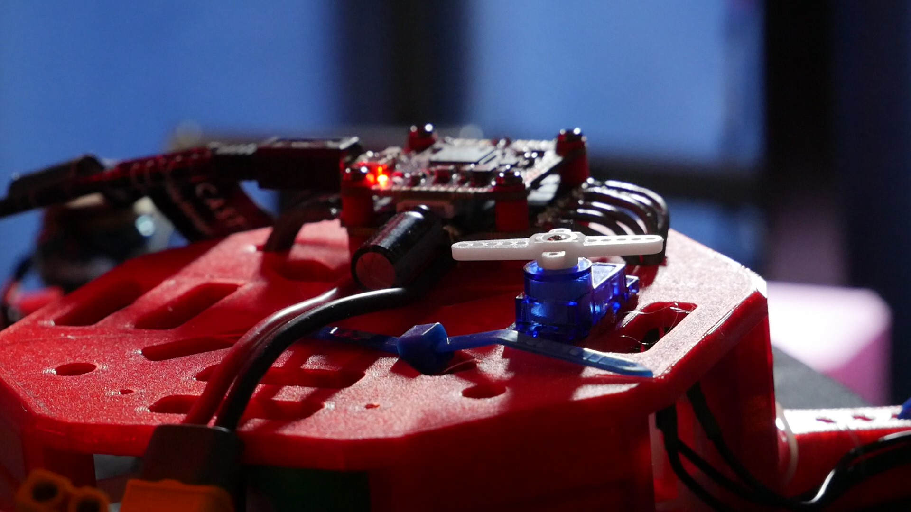
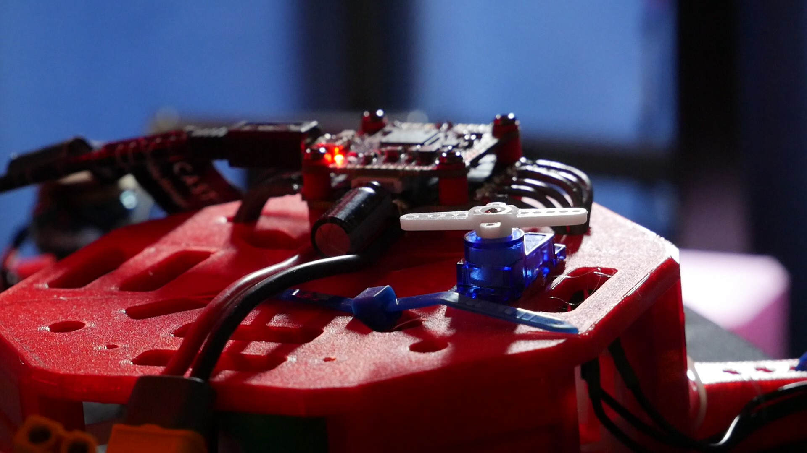

PokéBoy


 



> Welcome to the PokéBoy project! With the help of PCBWAY as the project sponsor, I developed a retropie project that would fit inside a standard store bought TCG Pokéball, because what else are you going to do with it?.
> This page will serve as a build guide if you ever wanted to make one, *I am not responsible for whatever outcome that might occur; like if you anger Arceus, that's not on me*
> Before we start, I highly recommend watching the full video on the PokéBoy below for a general overview of the build.
Parts
> Below are 3 links, the first one allows you to download an excel spreadsheet containing a BOM of every necessary component other than tools and wires. (you might have to port it to google sheets)
> The other two links will lead you to the PCB and CAD files respectively, I highly recommend ordering/sourcing/printing everything here while you mentally prepare.
Setting Up The Pi
> We can't solder all of the headers onto the Pi because we need to leave room for the other wires later, leave the first row clear, solder on the next 6 rows, leave the next one clear, then solder on the next 5 rows and leave the rest clear.
> One of my biggest concerns with this project is, "how long will it last before things get outdated?" There will likely be newer Pi's and firmware, so I suggest testing them first before we assemble anything. As of right now, I used a raspberry pi zero 2W and retropie-buster 4.8. (You might be able to use an orangepie and other fruits, but their installations for retropie might require an O.S. thus will have varying steps from this guide).
> As of right now, you need to install retropie using an externally downloaded image to apply a custom profile (necessary for enabling SSH on install) You can download retropie and the Raspberry Pi imager from the link below:
> Open the imager and enter the advance menu by pressing CTRL+SHFT+X. In the services tab, enable SSH, then in the general tab, set the hostname and username to pokeboy, set your own password. Uncer "Configure wireless LAN", enter your wifi name in SSID, then the password. Hit save (CTRL+X).
> In the imager, select the Raspberry Pi Zero 2W as the device. For operating system, select "Use custom" at the bottom and select the image that you downloaded. Select your SD card as storage, hit "Next", then "Yes" to apply custom OS settings.
> Insert the SD card into the Pi and power it on, give it about 5mins to run any setup processes and find your network. Then open a terminal like windows powershell, run:
ping pokeboy.local
to make sure the Pi is on the same network as your PC, it should send some kind of reply back.
> To connect to the Pi, use:
ssh pokeboy@pokeboy.local
You will be prompted to set up the fingerprint, type "yes", then enter your password to the Pi

> Next, we'll install and update the firmware to the Pi. Run:
sudo ./Retropie-Setup/retropie_setup.sh
then select the basic install, followed by the update afterwords
> Exit, then run the following two lines to finish updating everything under the sun and then some:
sudo apt update
sudo apt upgrade

Display
> We'll install the drivers for the display next. The LCD will likely come with a set of instructions, below are the commands required for the LCD I attached in the BOM *note, they have multiple variants of this screen, select the final command dependant on your variant*.
sudo rm -rf LCD-show
git clone https://github.com/goodtft/LCD-show.git
chmod -R 755 LCD-show
cd LCD-show/
sudo ./MHS35-show *OR* sudo ./LCD35-show *OR* other
> Disconnect the Pi, plug the display onto the Pi aligning the bottom headers (remember the top row should be missing), then power the Pi back on and reconnect with SSH. The display should show a basic terminal.
> We want the emulator to launch from boot, so re-enter the startup menu, select configuration, and select the first option to startup emulation station at boot. After the confirmation page, you can select ok -> cancel -> exit.


Pinout Note
> The next steps, it might be helpful to have a breadboard, that way you can test the audio and button setups... or you can blindly trust these instructions because we're both just that good.
> Use the following photo to reference where the GPIO pins are (right click then "open image in new tab")

Audio
> To setup audio, we need to enter the config file by running:
sudo nano /boot/config.txt
then scroll to the bottom to add the following line:
dtoverlay=audremap
this will automatically set the audio pin to GPIO 13. You can then save and exit (CTRL+X).
> Then, run the following:
sudo raspi-config
this opens a menu to set the default audio output, you want to select "System Options", "Audio", "Headphones". After the confirmation page, you can cancel -> back -> finish.
> You can reboot with the "sudo reboot" command or just powerdown and turn the pi back in, remember to SSH back in. From here, you can test the audio by temporarily wiring up the speaker directly to GPIO 13 and GND, then run the following line to play a test audio.
aplay /usr/share/sounds/alsa/Front_Center.wav


GPIO Buttons
> We will be using retrogame to set our GPIO pins as button inputs. Run the following two lines:
curl https://raw.githubusercontent.com/adafruit/Raspberry-Pi-Installer-Scripts/master/retrogame.sh > retrogame.sh
sudo bash retrogame.sh
You will be prompted to install a template, I used PiGRRL Zero, but either should be fine. You don't have to reboot yet.
> Open the config file with the line below, and set the GPIO pins to the keybinds seen in the final photo below, there will be unused keybinds that should be deleted from the template so they don't interfere with other GPIO pins, open the photo in another tab if necessary. save, exit, and reboot. (CTRL+X), (sudo reboot).
> You can now test the buttons by using a jumper wire to short a GPIO pin to GND, emulation station should respond, you can further configure the buttons there.

Roms
> I probably can't tell you how you can go onto reddit r/roms and pick one of those websites in the info tab on the right under the rules to download games... so I won't
> What I can do is provide a link to WinSCP so you can drag and drop files from your computer to the Pi over SSH
> Launch WinSCP, select New Site, then enter pokeboy for both Host name and User name, then save and ok.
> Click login and enter the password to access the Pi. The left side should be your computer and the right should be the pokeboy. On the left, navigate to where your games are. Then on the right, go to Retropie -> Roms then select the console you want to emulate. Drag and drop the game from left to right and reboot after its done downloading.


>